ライバー事務所とは？所属するメリット・デメリット
事務所所属で得られるサポートと注意点を整理します。
全30本。事務所選び・初心者ガイド・配信アプリ別に分類しています。
事務所所属で得られるサポートと注意点を整理します。

後悔しないためのチェックポイントを具体的に解説。
SNSや口コミサイトの評判の見極め方と、実在確認の方法を解説。
契約前に確認すべきポイントをチェックリストで解説。
契約書のどこを見ればよいかをまとめました。

還元率だけで判断しないための考え方を整理します。
「ノルマなし」表記の実態と確認方法を解説。
両者のメリット・デメリットを客観的に比較します。
移籍時に確認すべき契約条項を解説します。
怪しいスカウトを見抜くための確認手順です。
マネジメントの実務内容を具体的に紹介します。
配信を始めるまでの流れを初めての人向けに解説。
最初に揃えたい機材と予算の目安を紹介します。

緊張しがちな初配信を乗り切る話題の作り方。

本業と両立するための時間管理と注意点。
ギフトから収益化されるまでの流れを解説します。

モチベーションを保つための工夫を紹介します。
配信前に見直したいプライバシー対策です。
荒らしコメントへの落ち着いた対処法です。

副業・本業それぞれのケースで知っておきたい基本。

保護者同意など知っておきたいポイントです。
配信解禁の条件や向いているスタイルを紹介。

ダイヤ・ランク制度の仕組みを解説します。
2Dキャラクターで配信する仕組みを紹介します。

3Dアバターでの配信とイベント文化を紹介。
顔出し不要の配信スタイルとアプリを紹介。

歌枠配信を始めるための準備と著作権の注意点。

家事育児と両立するための工夫を紹介します。

オンライン対応事務所の選び方を紹介します。

年齢を強みに変える配信スタイルを紹介します。

活動の幅を広げるためのステップを紹介します。